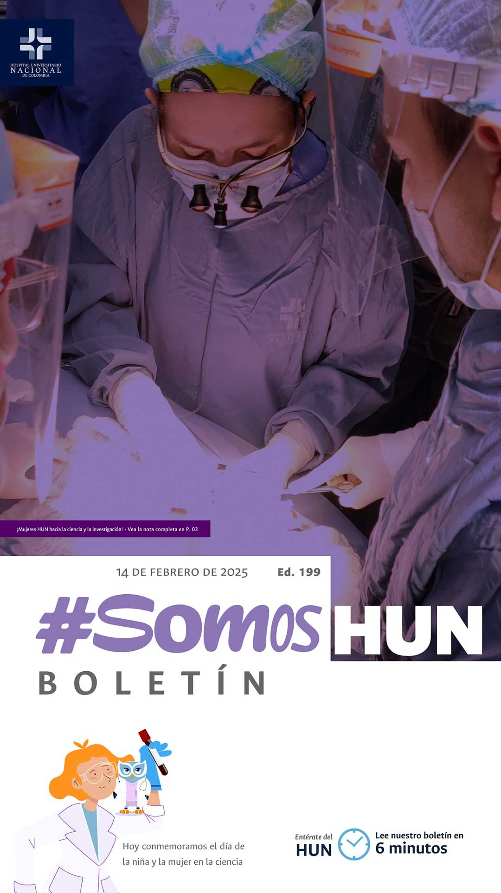
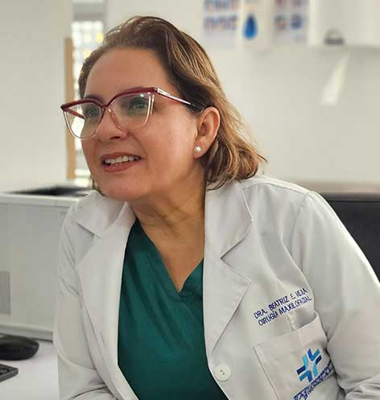
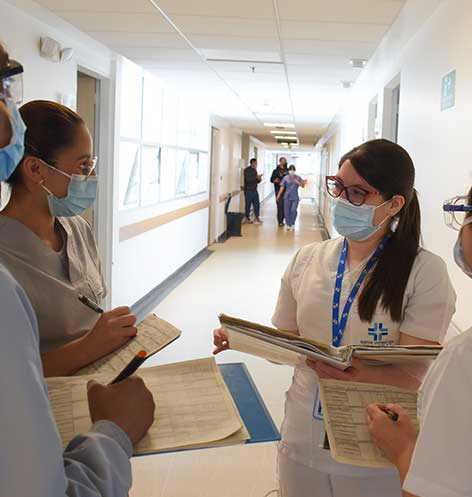
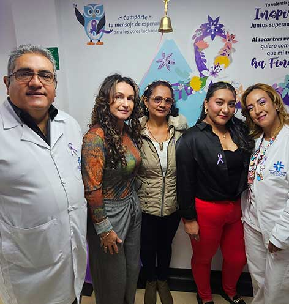
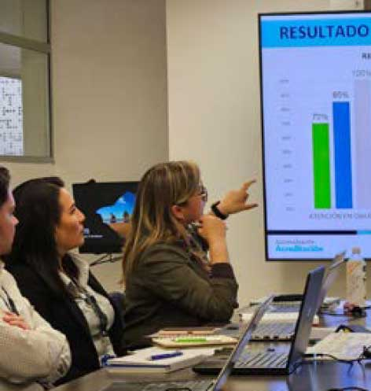

Ver todos los boletines
¡Mujeres HUN hacia la ciencia y la investigación!
La coordinadora del posgrado de Cirugía Oral y Maxilofacial de la Facultad de Odontología de la Universidad Nacional de Colombia (UNAL) y jefe de servicio de Cirugía Oral y Maxilofacial HUN, la doctora Beatriz Mejía cuenta con una larga trayectoria como cirujana, docente e investigadora. Con varios artículos publicados y el liderazgo del grupo de investigación GICOMFOUN nos comenta sobre el papel de las mujeres en este campo de ciencia comúnmente patriarcal.Leer más

Cerramos 2024 con resultados CLAVE en el mejoramiento
Durante 2024 el mejoramiento continuo de la calidad fue notorio gracias al impulso que se dio al uso de la metodología CLAVE desde todos los equipos (EAE, comités, EPM y EMI), esto produjo un aumento del 34% en la identificación de oportunidades de mejora que pasó de 598 a 803 en 2024 atribuído al reporte por parte de procesos.Leer más

La unión y la esperanza son el mejor tratamiento
El pasado 4 de febrero inauguramos el mural de la esperanza, en honor a todas aquellas personas que superaron su lucha contra el cáncer y también a quienes no. En el evento Carol Bejarano y Sandra Pulido sobrevivientes del cáncer bajo el acompañamiento del Programa de Oncología HUN, comentaron lo difíciles que habían sido estos momentos para ellas, sus familias y sus compañeros de sala de quimioterapia; de igual forma resaltaron la inquebrantable labor que realiza el equipo asistencial de nuestro hospital para hacer lo humana y científicamente posible en la lucha contra esta enfermedad.. Leer más

El VIII ciclo de Autoevaluación de los Estándares de Acreditación ya arrancó
Como es habitual en nuestra cultura organizacional, luego del despliegue primario se lleva a cabo durante el mes de febrero la Autoevaluación de los 160 estándares de Acreditación.Leer más